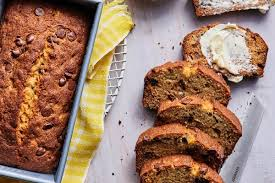

In the Great Depression, during the 1920's and 30's, the stock market crashed.
The poor economic situation led to a massage food shortage all across the country.
People became creative and used up every single item of food in thir house that they
could possibly use. Even gross, old, brown, rotten bananas. All the ingredients of
banana bread were relatively accessable: flour, sugar, some kind of leavening agent
(commonly baking soda), butter or fat, and most improtantly rotten bananas.
Some of my earliest memories are baking or coking in thee kitchen with my mom and family.
My mom and dad raised my sister and I on this banana bread recipe. Whenever I make it we always
add way too many chocolate chips!!

I used and article about the orgins of banana bread from the King Arthur Baking website.
kingarthurbaking.com